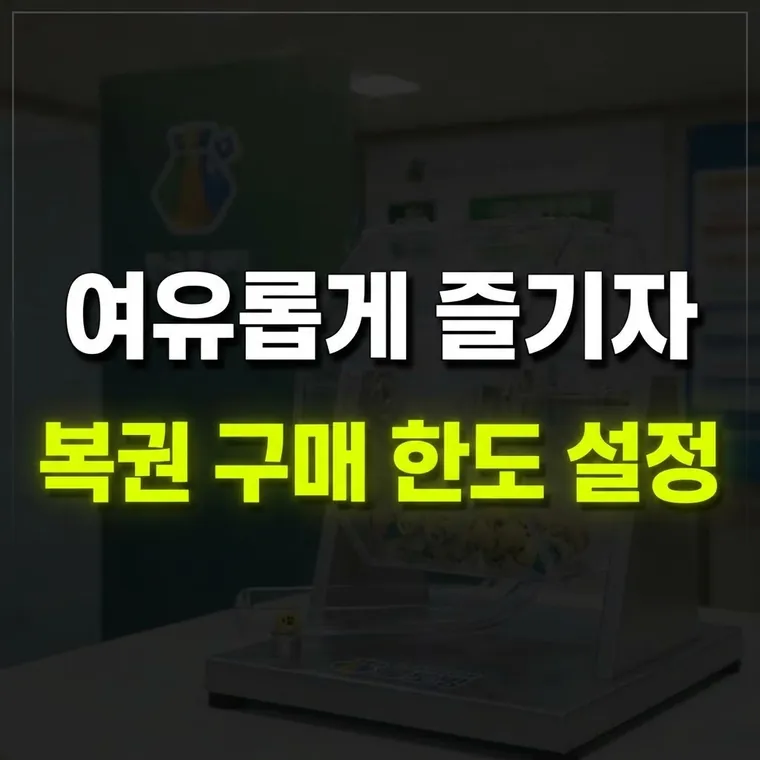

동행복권 건전구매 프로그램: 자가진단과 건전구매 서약 알아보기
동행복권은 건전구매 프로그램으로 과몰입 자가진단, 건전구매 서약, 구매한도 설정, 셀프 휴식계획 설정을 제공합니다. 어려움을 느끼면 도박문제 상담 전화 1336에 도움을 요청할 수 있습니다.

즐거운 취미가 되기 위한 절제의 기준
복권을 구매하는 행위는 한 주간의 소소한 기대감과 희망을 제공하는 가벼운 오락이 될 수 있습니다. 하지만 당첨에 대한 과도한 집착이나 일확천금을 노리는 심리가 커지면, 자신도 모르는 사이에 구매 금액과 횟수가 늘어나 생활에 부담을 주는 상황으로 이어지기 쉽습니다.
공식 발행 기관인 동행복권에서는 이용자가 스스로 자신의 복권 구매 습관을 돌아보고 과몰입을 미리 방지할 수 있도록 '건전구매 프로그램'을 운영하고 있습니다.
이번 글에서는 동행복권에서 제공하는 건전구매 프로그램의 핵심 요소인 자가진단 테스트, 건전구매 서약, 그리고 셀프 통제 기능의 활용법을 차근차근 살펴보겠습니다.
도박문제 자가진단(CPGI) 테스트의 활용과 의미
건전구매 프로그램의 첫 번째 단계는 현재 본인의 복권 구매 행동 상태를 점검해 보는 것입니다. 이때 활용되는 평가 도구가 캐나다 도박문제 지표를 기반으로 한 CPGI(Canadian Problem Gambling Index) 자가진단 테스트입니다.
- 점검 항목의 특징: "내가 정한 한도를 넘어 복권을 산 적이 있는가?", "복권 구매 금액을 마련하려고 다른 사람에게 돈을 빌린 적이 있는가?", "복권 구매로 인해 일상생활이나 가족과의 관계에 무리가 생긴 적이 있는가?" 등의 질문을 객관식으로 답하는 방식입니다.
- 결과 구분: 자가진단 결과는 점수에 따라 위험 수준별로 나누어 안내됩니다.
- 주기적 점검의 필요성: 정기적으로 테스트를 해 보면 자신이 의식하지 못했던 과몰입 징후를 일찍 알아차리고, 스스로 구매 금액을 줄이거나 쉬어가는 계기로 삼을 수 있습니다.
건전구매 서약과 셀프 구매·휴식 계획 설정법
자가진단을 마친 후에는 건전한 이용을 다짐하는 '건전구매 서약'과 실질적인 설정 기능들을 활용할 수 있습니다.
- 건전구매 서약: 동행복권의 건전구매 서약에는 "구매 횟수와 금액을 정하고 한도를 넘지 않는다", "복권 상품에 대한 정확한 정보를 파악하고 충분히 이해하며 구매 금액에 집착하지 않는다" 같은 다짐이 담겨 있습니다. 구매액이나 횟수가 늘어난다고 느껴질 때는 수시로 과몰입 자가진단 테스트로 점검하도록 안내하고 있습니다.
- 셀프 구매계획 설정(구매한도): 동행복권 홈페이지에서는 스스로 구매한도를 설정하는 기능을 제공합니다. 한도를 정해 두면 계획한 금액 안에서 구매하는 데 도움이 됩니다.
- 셀프 휴식계획 설정: 복권 구매를 한동안 쉬어가고 싶을 때 스스로 휴식 계획을 설정할 수 있는 기능입니다.
도움을 받을 수 있는 곳과 알아둘 점
- 상담 및 지원 기관: 복권 과몰입으로 어려움을 겪는다면 도박문제 상담 전화 1336(한국도박문제예방치유원 헬프라인)에서 도움을 받을 수 있습니다. 불법도박은 불법도박신고센터(1855-0112)에 신고할 수 있습니다.
- 소액 오락의 관점 유지하기: 복권은 자산 투자가 아니라 한 주의 여가를 즐기는 오락 소비라는 점을 기억하세요.
- 메뉴 찾는 법: 동행복권 홈페이지의 '건전구매 프로그램' 메뉴에서 자가진단과 구매한도 설정 등을 이용할 수 있습니다.
복권은 정해 둔 한도 안에서 가볍게 즐기는 것이 기본입니다. 구매가 늘어난다고 느껴진다면 자가진단으로 먼저 점검해 보세요.
· 동행복권 건전구매 프로그램은 도박문제 자가진단(CPGI)을 통해 본인의 과몰입 상태를 점검할 수 있도록 돕습니다.
· 건전구매 서약과 더불어 구매한도 설정, 셀프 휴식계획 설정 기능을 이용하면 스스로 과도한 구매를 막는 데 도움이 됩니다.
· 복권은 소액으로 즐기는 가벼운 오락이며, 필요하면 전문 상담 기관(1336)의 도움을 받는 것이 중요합니다.
이 글의 기준과 예시는 2026년 10월 기준입니다. 법령이나 제도가 바뀌면 내용이 달라질 수 있으니, 신청·신고·계약 전에는 해당 기관에서 최신 기준을 확인하세요. 계산 결과와 설명은 참고용입니다.
🔮 다음 글 예고
다음 글에서는 조합론으로 홀짝 비율과 연속 번호가 당첨 확률에 영향을 주는지 살펴봅니다.